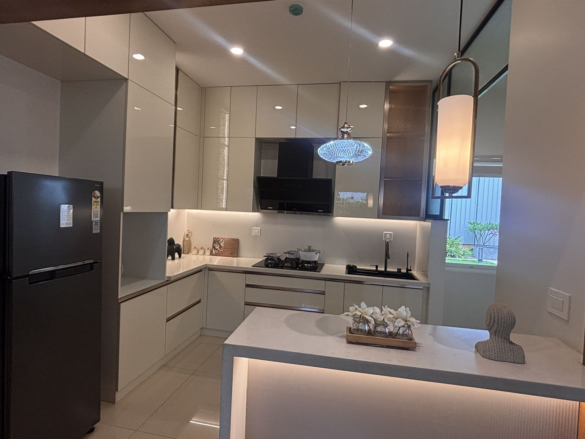
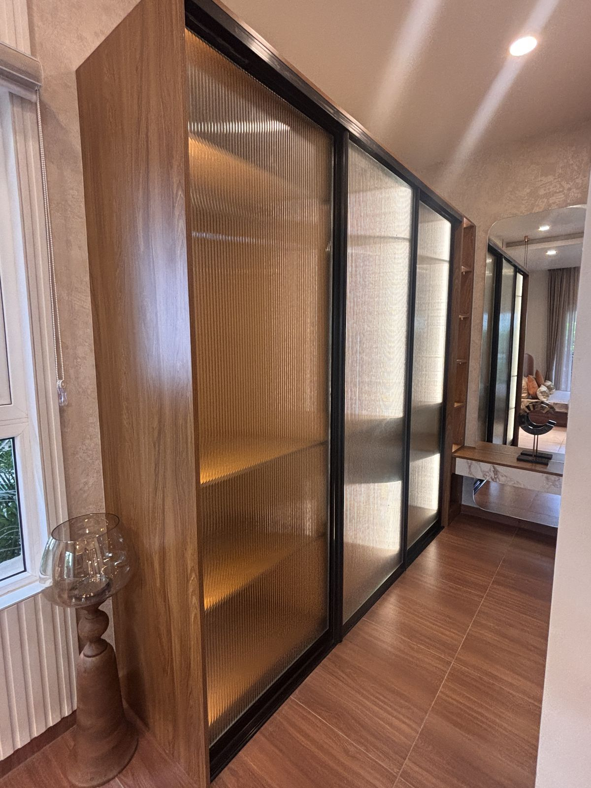

Most interior quotes in Karnataka are written once and reused everywhere. The same plywood grade, the same hinge brand, the same "moisture resistant" line item, whether the home is in Indiranagar or Kadri. It works fine for one of those two cities and quietly fails the other, usually a few years after the handover, once the warranty conversation has been forgotten.
We say this as a studio that actually designs and executes in both Bangalore and Mangalore, not as a hypothetical. The two cities sit roughly 350 kilometres apart and might as well be different climates entirely. Treating them the same in a BOQ isn't a shortcut, it's a bet against physics.
The climate difference, in numbers
Bangalore sits at about 900 metres elevation, inland, with moderate humidity that typically ranges from 40 to 65 percent through the year. It gets heavy monsoon downpours between June and September, but the air dries out again within hours. There's no salt in the air, and termite pressure is real but localised, mostly near landscaping and ground-floor units.
Mangalore sits at sea level on the Arabian Sea coast. Relative humidity holds between 70 and 90 percent for most of the year, not just during monsoon. The air carries salt, which is a different and more corrosive problem than plain moisture. And Mangalore's monsoon isn't just heavier, it's genuinely one of the wettest urban rainfall totals in Karnataka, often more than double Bangalore's annual figure.
That gap changes what actually happens inside a finished room, not just what a brochure recommends.
In Bangalore, the earliest failure point is usually low-grade edge banding lifting at joints, or a ground-floor unit near a garden picking up termites. In Mangalore, it's carcass boards swelling at the edges from ambient humidity alone, and standard hardware rusting at the hinge pins within two to three years, even in rooms that never see direct water.

A kitchen carcass built for Bangalore's climate needs a materially different spec than the same layout in Mangalore.
Room-by-room: what changes and what doesn't
This isn't about upgrading everything for Mangalore or downgrading everything for Bangalore. It's about matching the grade to the actual exposure, room by room.
| Element | Bangalore spec | Mangalore spec |
|---|---|---|
| Kitchen carcass | BWR plywood is usually sufficient | BWP plywood, no exceptions |
| Bathroom vanity | BWP plywood or HDHMR | BWP plywood, sealed edges on all sides |
| Bedroom wardrobe carcass | Commercial ply or BWR is fine away from windows | BWR minimum; BWP for ground-floor or sea-facing rooms |
| Hinges & channels | Standard-grade hardware from a known brand | Stainless steel 304, always |
| Edge banding | 0.8mm PVC banding is adequate | 1mm+ banding with full edge sealing |
| Balcony-facing storage | Standard exterior-grade paint finish | Marine-grade finish or avoid wood entirely |
| Wall finishes near wet areas | Standard waterproofing at joints | Waterproofing plus a vapour-check on external walls |
Where Bangalore homeowners overpay
The most common mistake we see in Bangalore quotes isn't under-speccing, it's the opposite. Some companies default to BWP plywood and marine-grade hardware across an entire home, including bedroom wardrobes nowhere near a wet zone, and price it accordingly. For most Bangalore apartments above ground floor, that's paying a coastal premium for a climate that doesn't demand it. The exceptions are genuinely worth spending on: ground-floor units, homes backing onto heavy landscaping, and kitchens or bathrooms anywhere in the building.
Where Mangalore homeowners get underserved
The opposite mistake shows up constantly in Mangalore, usually from companies that primarily operate out of Bangalore and quote the same spec sheet everywhere. Commercial-grade board and standard hardware look identical to the coastal-grade version on the day of handover. The difference only becomes visible eighteen months to three years later, as edges begin to swell and hinges start to stick or discolour. By then it's a repair conversation, not a warranty one.

Hardware grade matters as much as the board itself once humidity stays above 70 percent for most of the year.
Why humidity and salt air don't damage things the same way
"Moisture resistant" gets used as one generic phrase, but plain humidity and salt-laden coastal air attack materials through different mechanisms, which is part of why a Bangalore-appropriate spec can look fine on paper and still fail in Mangalore.
Plywood is layers of wood veneer bonded with resin. BWR grade uses a melamine-based resin that resists occasional moisture and humidity swings well. BWP grade uses a phenolic resin, the same chemistry used in exterior-grade marine plywood, which keeps its bond strength even under sustained high humidity or direct water contact. In Bangalore's moderate, mostly-dry air, that difference rarely gets tested. In Mangalore, where relative humidity rarely drops below 70 percent, BWR-grade bonding is under constant low-level stress, which is why edges start to separate at the two- to three-year mark rather than lasting the decade a BWP board would.
Salt air is a separate problem entirely, and it's a metallurgical one, not a wood one. Airborne chloride from sea spray settles on any exposed metal and accelerates corrosion electrochemically, far faster than plain moisture would on its own. This is why standard mild-steel hinges, that would last well over a decade in Bangalore, can start showing surface rust and stiff action within two to three years in a Mangalore home, even in rooms with no direct water exposure. Stainless steel 304 resists this because chromium in the alloy forms a passive oxide layer that chloride can't easily break down. It's a genuinely different grade of hardware, not a marketing upsell.
Best time of year to start interior work in each city
Timing your project around the calendar matters more in one of these cities than the other. In Bangalore, interior work can reasonably start in most months; the main thing to avoid is finishing paint or veneer work during the heaviest monsoon weeks in July and August, when ambient humidity spikes briefly and slows drying times.
In Mangalore, timing matters more. The southwest monsoon between June and September brings sustained heavy rainfall and the year's highest humidity, which is a difficult window for on-site carpentry, painting, and any work involving adhesives or finishes that need to cure. Where possible, we schedule the finishing stages of Mangalore projects for the post-monsoon months from October through May, when humidity is comparatively lower and materials cure properly the first time, rather than needing rework once the air dries out.
Regardless of who you hire, in either city, there are three questions worth asking before you sign anything:
- Which specific grade is quoted, by name? "Waterproof plywood" isn't a grade. BWP 710, BWR, MR, and commercial ply are all different products with different real-world lifespans. Ask for the grade by its actual designation.
- Is the spec uniform, or location-specific? A quote that uses the same board and hardware line item for every room in the house, in either city, hasn't actually been thought through room by room.
- What's the hardware brand and material? Hettich, Häfele, and similar brands publish their material specs. "Branded hardware" without a name attached is a placeholder, not a spec.
At Wood & Co., every quotation lists the exact plywood grade, hardware brand, and finish per room, not per home, because the right answer genuinely changes room to room and city to city. It's slower to write than a single-line "premium materials used throughout," but it's the only version that actually holds up in Mangalore's air or matches what a Bangalore home actually needs.
Frequently asked questions
Is BWP plywood necessary everywhere in a Mangalore home?
Not in every single unit, but far more widely than in Bangalore. Mangalore's coastal humidity sits at 70 to 90 percent for most of the year, so any carcass exposed to a kitchen, bathroom, balcony, or ground-floor room benefits from BWP grade. Bedroom wardrobes away from wet zones can sometimes use BWR, but kitchens and bathrooms should not be compromised on.
Can I use Bangalore-spec material in my Mangalore home to save cost?
You can, but it usually costs more in the long run. Commercial-grade boards and standard hardware that work fine in Bangalore tend to swell, delaminate, or rust within 2 to 4 years in Mangalore's coastal air. The upfront saving is often smaller than a single early replacement.
How much more does coastal-grade material cost compared to standard grade?
BWP plywood typically costs 10 to 20 percent more than BWR, and stainless steel 304 hardware costs somewhat more than standard mild-steel hinges and channels. Against the cost of redoing a kitchen in 3 years, it is a modest premium.
Does running the AC often reduce the need for moisture-resistant material in Mangalore?
It helps indoor humidity in that specific room, but not enough to skip proper material grading. Kitchens, bathrooms, and balcony-facing units still see direct moisture and salt-laden air regardless of AC use elsewhere in the home.
Which cities does Wood & Co. Interiors serve?
Wood & Co. Interiors designs and executes projects in both Bangalore and Mangalore, specifying materials to match each city's climate rather than using one catalog spec everywhere.
Get a spec that actually matches your city.
Free design consultation and a transparent, room-by-room material quotation for homes in Bangalore & Mangalore.